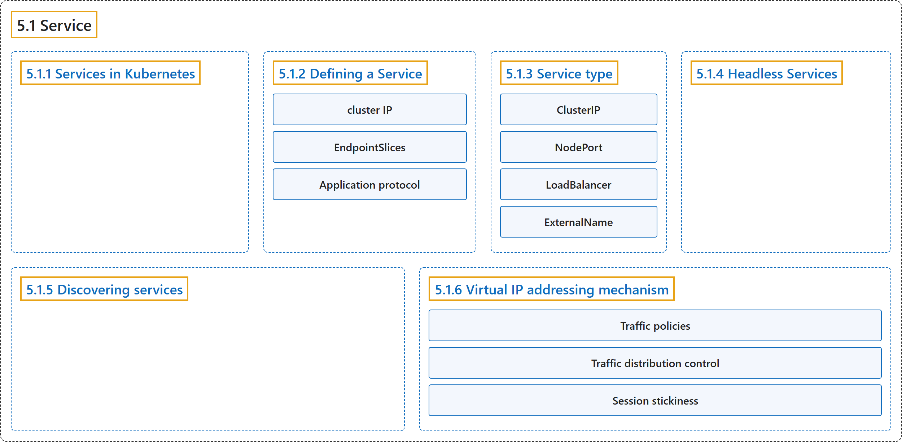

5.1 Service
Classification

Glossary
| Term | Definition | 中文翻译 | Source |
|---|---|---|---|
| 5.1 Service Service |
"In Kubernetes, a Service is a method for exposing a network application that is running as one or more Pods in your cluster." | 在 Kubernetes 中，Service 是一种暴露网络应用的方法，该应用在集群中以一个或多个 Pod 运行。 | The Kubernetes Authors, n.d., "Service", para. 2 |
| 5.1.1 Services in Kubernetes Kubernetes 中的 Service |
"The Service API, part of Kubernetes, is an abstraction to help you expose groups of Pods over a network." | Service API 是 Kubernetes 的一部分，是一种抽象，帮助你通过网络暴露一组 Pod。 | The Kubernetes Authors, n.d., "Services in Kubernetes", para. 1 |
| 5.1.2 Defining a Service 定义 Service |
"A Service is an object (the same way that a Pod or a ConfigMap is an object)." | Service 是一个对象（就像 Pod 或 ConfigMap 是对象一样）。 | The Kubernetes Authors, n.d., "Defining a Service", para. 1 |
| cluster IP 集群 IP |
"Kubernetes assigns this Service an IP address (the cluster IP), that is used by the virtual IP address mechanism." | Kubernetes 为这个 Service 分配一个 IP 地址（即集群 IP），供虚拟 IP 地址机制使用。 | The Kubernetes Authors, n.d., "Defining a Service", para. 5 |
| EndpointSlices EndpointSlice |
"EndpointSlices are objects that represent a subset (a slice) of the backing network endpoints for a Service." | EndpointSlice 是对象，代表 Service 后端网络端点的一个子集（一个切片）。 | The Kubernetes Authors, n.d., "EndpointSlices", para. 1 |
| Application protocol 应用协议 |
"The appProtocol field provides a way to specify an application protocol for each Service port." |
appProtocol 字段提供一种方式来指定应用协议，针对每个 Service 端口。 |
The Kubernetes Authors, n.d., "Application protocol", para. 1 |
| 5.1.3 Service type Service 类型 |
(No definition) | （无定义） | The Kubernetes Authors, n.d., "Service type" |
| ClusterIP ClusterIP |
"This default Service type assigns an IP address from a pool of IP addresses that your cluster has reserved for that purpose." | 这种默认的 Service 类型分配一个 IP 地址，来自集群为此预留的 IP 地址池。 | The Kubernetes Authors, n.d., "type: ClusterIP", para. 1 |
| NodePort NodePort |
"If you set the type field to NodePort, the Kubernetes control plane allocates a port from a range specified by --service-node-port-range flag (default: 30000-32767)." |
如果把 type 字段设为 NodePort，Kubernetes 控制平面会分配一个端口，来自 --service-node-port-range 标志指定的范围（默认：30000-32767）。 |
The Kubernetes Authors, n.d., "type: NodePort", para. 1 |
| LoadBalancer LoadBalancer |
"On cloud providers which support external load balancers, setting the type field to LoadBalancer provisions a load balancer for your Service." |
在支持外部负载均衡器的云服务商上，把 type 字段设为 LoadBalancer 会为 Service 供应一个负载均衡器。 |
The Kubernetes Authors, n.d., "type: LoadBalancer", para. 1 |
| ExternalName ExternalName |
"Services of type ExternalName map a Service to a DNS name, not to a typical selector such as my-service or cassandra." |
ExternalName 类型的 Service 把 Service 映射到一个 DNS 名称，而不是映射到 my-service 或 cassandra 这类常见的选择算符。 |
The Kubernetes Authors, n.d., "type: ExternalName", para. 1 |
| 5.1.4 Headless Services 无头 Service |
"In this case, you can create what are termed headless Services, by explicitly specifying "None" for the cluster IP address (.spec.clusterIP)." |
这种情况下，你可以创建所谓的无头 Service，方法是为集群 IP 地址（.spec.clusterIP）显式指定 "None"。 |
The Kubernetes Authors, n.d., "Headless Services", para. 1 |
| 5.1.5 Discovering services 发现服务 |
"For clients running inside your cluster, Kubernetes supports two primary modes of finding a Service: environment variables and DNS." | 对于集群内运行的客户端，Kubernetes 支持两种主要的服务发现方式：环境变量和 DNS。 | The Kubernetes Authors, n.d., "Discovering services", para. 1 |
| 5.1.6 Virtual IP addressing mechanism 虚拟 IP 寻址机制 |
(No definition) | （无定义） | The Kubernetes Authors, n.d., "Virtual IP addressing mechanism" |
| Traffic policies 流量策略 |
"You can set the .spec.internalTrafficPolicy and .spec.externalTrafficPolicy fields to control how Kubernetes routes traffic to healthy (“ready”) backends." |
你可以设置 .spec.internalTrafficPolicy 和 .spec.externalTrafficPolicy 字段，控制 Kubernetes 如何把流量路由到健康（“就绪”）的后端。 |
The Kubernetes Authors, n.d., "Traffic policies", para. 1 |
| Traffic distribution control 流量分布控制 |
"The .spec.trafficDistribution field provides another way to influence traffic routing within a Kubernetes Service." |
.spec.trafficDistribution 字段提供了另一种方式，用来影响 Kubernetes Service 内的流量路由。 |
The Kubernetes Authors, n.d., "Traffic distribution control", para. 1 |
| Session stickiness 会话粘性 |
"If you want to make sure that connections from a particular client are passed to the same Pod each time, you can configure session affinity based on the client's IP address." | 如果你想确保某个客户端的连接每次都被转发到同一个 Pod，可以基于客户端 IP 地址配置会话亲和性。 | The Kubernetes Authors, n.d., "Session stickiness", para. 1 |
References
The Kubernetes Authors. (n.d.). Service. Kubernetes Documentation. Retrieved October 31, 2026, from https://kubernetes.io/docs/concepts/services-networking/service/